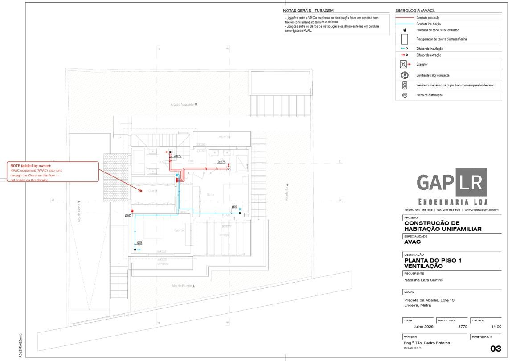
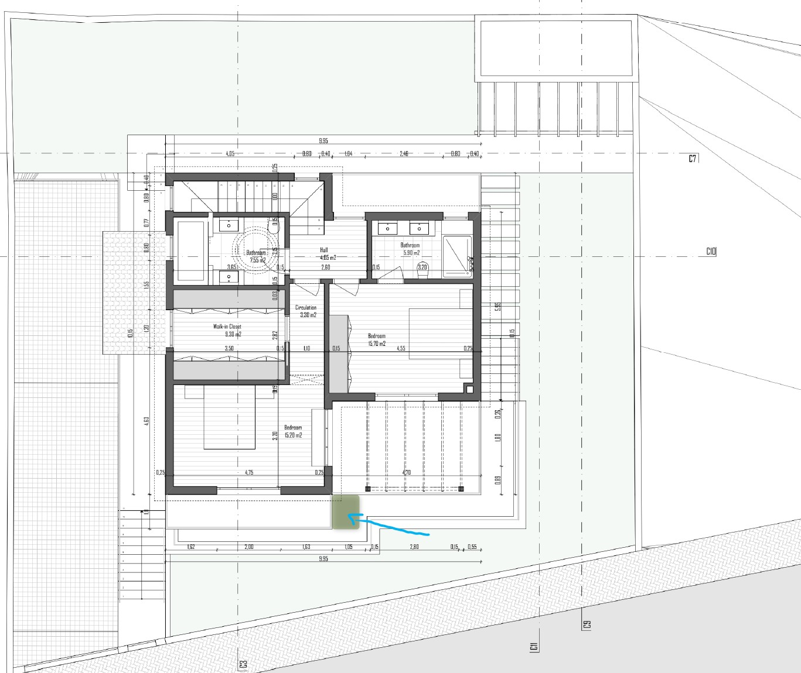

Plans and 3D
Architecture by OTK Arquitectos. Always check the date of a drawing before building from it.

Floor plans
OTK drawings dated 18 Jan 2026.
Site
Topographic survey of the plot and the plan of the allotment.
3D model and extracts
Interactive model from the architect (BIMx): open the 3D model.
Engineering plans
Engineering designs of July 2026 (GAP LR, process 3775). Titles in Portuguese are kept in brackets. The last file is the architecture drawing in DWG format.
Amendments to the engineering plans
Revision 2, 26 Aug 2026. Four amendments to the July 2026 designs. Each is to be re-engineered and priced by the responsible contractor, who confirms the technical solution, the cost impact and the construction stage by which it must be fixed.
1. Closet: ventilation and climate To confirm
Wood Home, AVAC / GAP LR, electrician. Ref: AVAC drawing 03, Planta do Piso 1, Ventilação.

The first floor walk in closet (9.30 m²) is to be served by the AC and VMC systems. It is not on the current drawing.
- Duct openings through the structural panels made in the factory, not cut on site.
- Extraction is the priority: humidity and odour control.
- An air return path is needed (door undercut or transfer grille).
- Confirm the impact on the thermal calculation and on heat pump sizing.
- Coordinate duct routing with the closet joinery before manufacture.
Required by: before the structural panels and closet joinery are manufactured.
2. Basement: drainage for a future tap and shower To confirm
Gonçalo, AVAC / GAP LR. Ref: Rede de Águas Residuais drawing 02, Planta do Piso -1.

Leave capped waste and water connections in the basement so a tap and shower can be added later without breaking the slab.
- Connect into the existing inspection chamber marked on the drawing.
- Critical: confirm there is enough fall for a shower trap. Basement floor is at +37.50, existing connection invert at 37.20. If gravity is insufficient, provide a pumping chamber.
- Include venting. A trap without a vent will siphon.
- Add cold and hot water stubs in the same operation.
- Stub outs capped, photographed and their positions recorded before the pour.
Required by: before the foundation slab is poured. This item cannot be recovered later.
3. Photovoltaic: pre-installation To confirm
Wood Home, electrician. Ref: Planta da Cobertura, to be marked on the electrical drawing (IE), not ITED.

Roof and electrical installation prepared for a future PV system, so that fitting it later needs no work on the sealed roof or the finished walls.
- Pitched roof: the array goes on the south facing plane only.
- Initial target about 9 m² (about 2 kWp). Provision sized for expansion to about 5 kWp.
- Wood Home: structural anchors and waterproofed penetrations built into the roof panels in the factory, and confirmation that the additional load is covered by the structural design.
- Electrician: DC conduit from roof to technical room, separate from AC and ITED; reserved breaker space in the board; inverter and battery position; earthing and bonding.
- Panel layout to be proposed by the contractor.
Required by: before the roof panels are manufactured.
4. First floor: terrace extension To confirm
Wood Home. Ref: Planta do Piso 1.

Extend the first floor terrace so it is possible to walk between the two bedroom terraces.
- OTK has confirmed the extension is acceptable within the approved design. No licensing amendment required.
- Minimum clear passage width to be confirmed, target 1.00 m.
- Includes structure, continuity of the waterproofing, guardrail, and a rainwater drain point for the added area.
Required by: before the first floor panels are manufactured.